Gobo, Wakayama: things to do, food and stays
Gobo · Wakayama
Gobo
Highlighted on the Wakayama map.
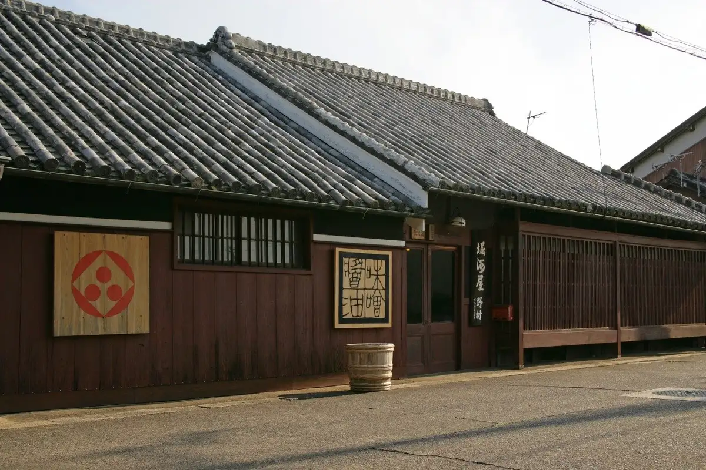
Stay
Bitcoin Villa ビットコインヴィラ
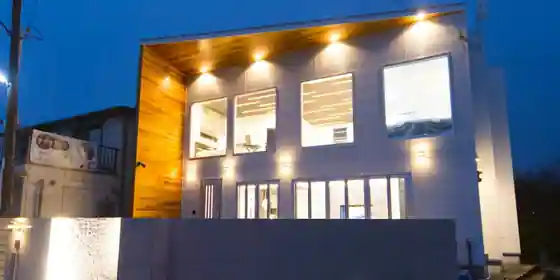
Bitcoin Villa Bittoko Inn Villa
ビジネスホテル百寿
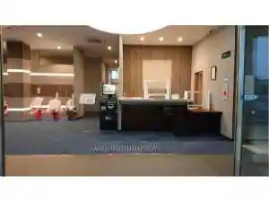
Business Hotel Hyakuju
Hotel in Shima, Gobo with a large communal bath and business travelers.
ホテル グリーンヒル御坊駅前
Hotel Gurinhiru Gobo Ekimae
Renovation Hotel Gobo
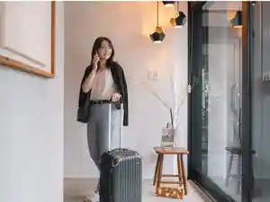
Renovation Hotel Gobo
Inn in Yukawa, Gobo; 1-minute walk from Wa6Nen4Gatsukaigyo)Jrgobo Station.
フォレストイン御坊
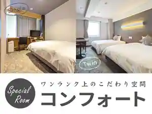
Foresutoin Gobo
Inn in Iwanai, Gobo with a large communal bath; 5-minute drive from Senyo)Noaruhotelgobo IC.
Dining
川常
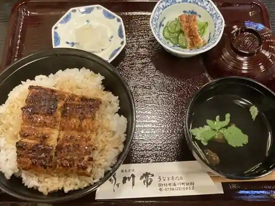
Kawa Tsune
らぁめん たんぼ
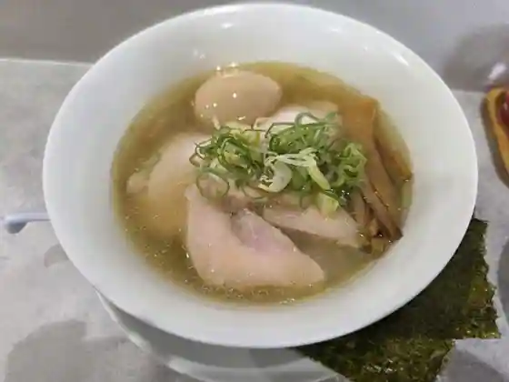
Ramen Tanbo
元祖せち焼き やました
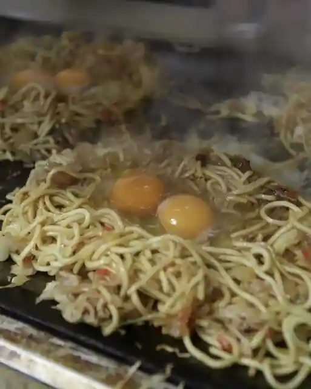
Ganso Sechi Yaki Yamashita
フィッシュテラス はし長
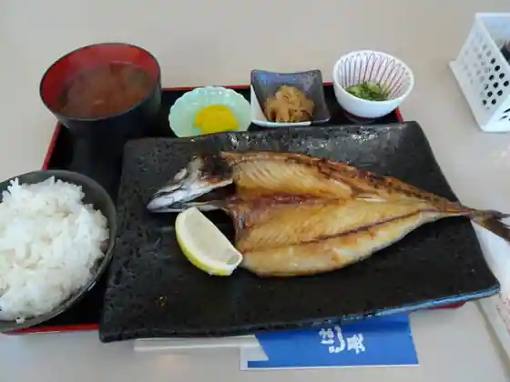
Fisshu Terrace Hashi Cho
とんかつ一番
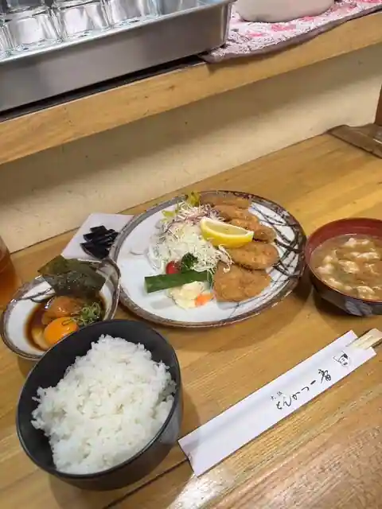
Tonkatsu Ichiban
まるよし
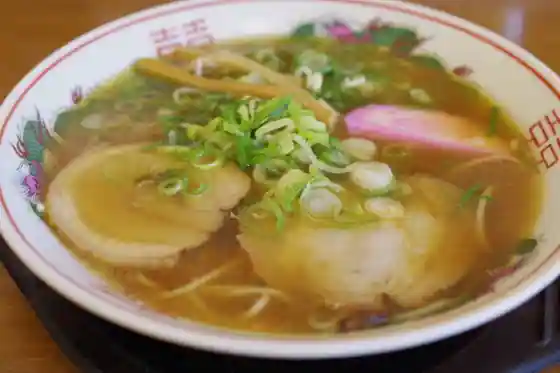
Maruyoshi
せちごぉて屋
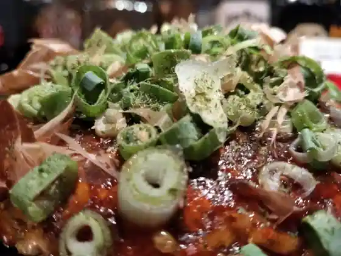
Sechigote Ya
らーめん幕末 御坊本店
Ramen Bakumatsu Gobo Hon
ボナペティ ヤナギヤ
Bonapetei Yanagiya
birdman
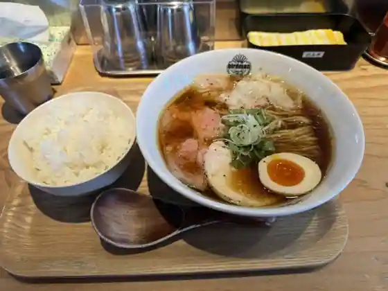
birdman
丸金トンカツ亭
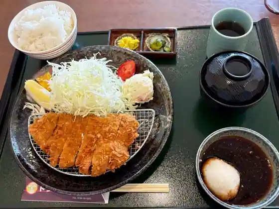
Marukin Tonkatsu Tei
斎家
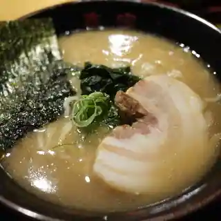
Sai Ie
ニューふくすけ
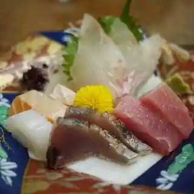
Nyu Fukusuke
寿食堂
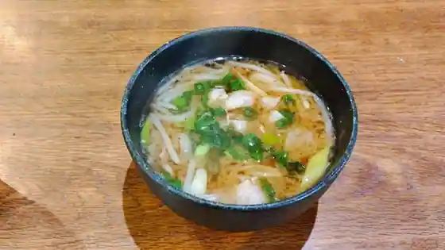
Hisashi Shokudo
ゑびすや食堂
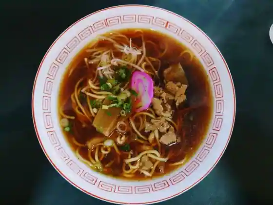
Ebisuya Shokudo
巨人
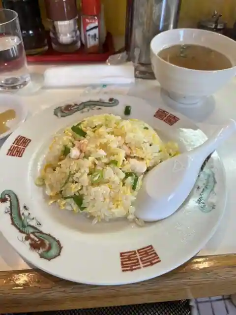
Kyojin
そば&Cafe なかがわ
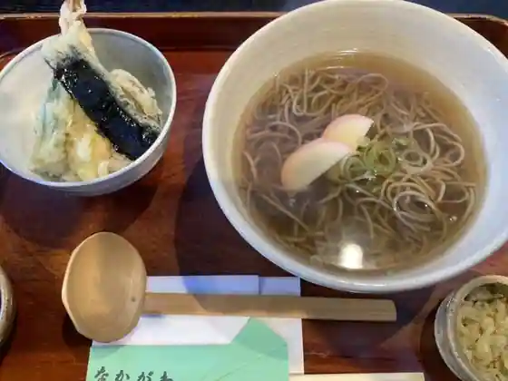
Soba &Cafe Nakagawa
朝日堂
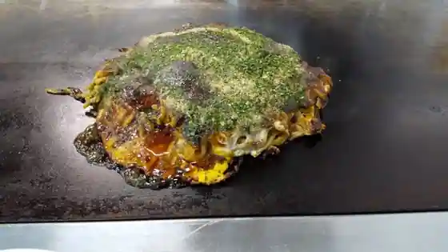
Asahi Do
咲吉
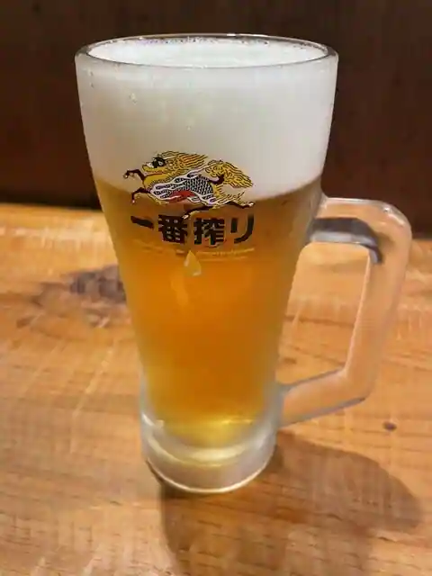
Saki Kichi
笑笑
Shosho
牛心
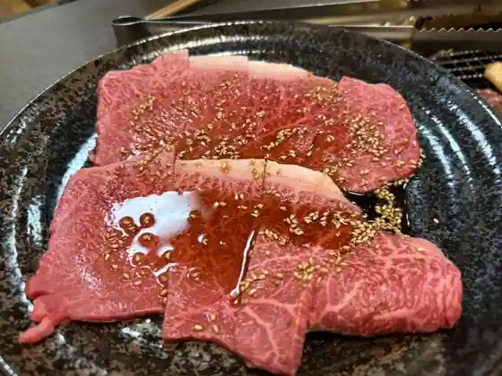
Ushi Kokoro
らぐまん２０００
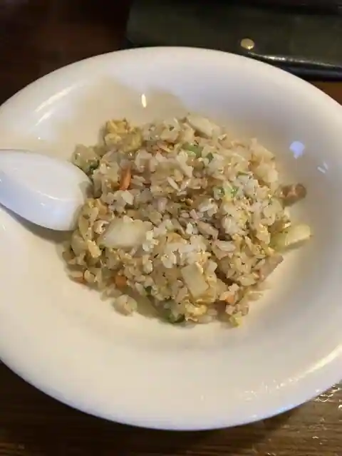
Raguman 2000
カッシー・デ・フルッティ
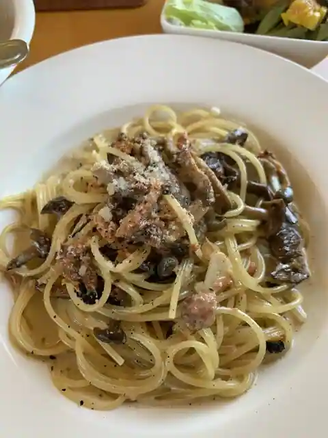
Kasshi De Furuttei
Sights
Terauchi Town